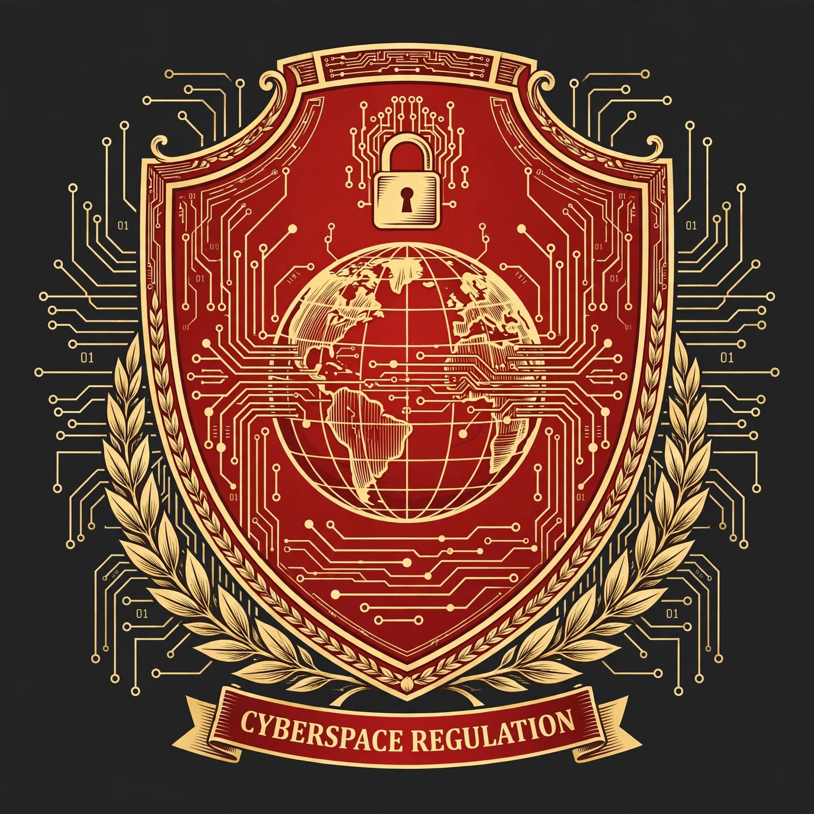

| Cyberspace Administration of China | |
|---|---|
 | |
| Chinese | 国家互联网信息办公室 |
| Abbreviation | CAC |
| Formed | 2011 (as the State Internet Information Office); reorganized 2014 |
| Type | Party/state regulatory agency (one institution with two names) |
| Parent body | Central Cyberspace Affairs Commission of the CCP; State Council |
| Headquarters | Beijing |
| Functions | Internet content regulation, online censorship enforcement, cybersecurity policy, data security oversight |
| Website | cac.gov.cn |
The Cyberspace Administration of China (CAC; Chinese: 国家互联网信息办公室, lit. "State Internet Information Office") is the principal agency of the People's Republic of China responsible for regulating the internet, overseeing online content, and formulating cybersecurity policy. It functions simultaneously as an office of the Central Cyberspace Affairs Commission of the Chinese Communist Party — an arrangement known as "one institution with two names" — giving it both party and state authority.
The CAC originated as the State Internet Information Office, created in 2011 under the State Council. In 2014, the establishment of the Central Leading Group for Cyberspace Affairs (upgraded to a Commission in 2018), chaired by Xi Jinping, elevated the office into the central executor of China's internet governance strategy, under its first prominent director, Lu Wei. Its remit expanded from online news and content licensing to comprehensive cyberspace governance, including cybersecurity reviews, data policy, and algorithm regulation.
The CAC enforces China's system of internet censorship: it sets content rules for websites, apps, and social media platforms; conducts campaigns against "illegal and harmful information"; licenses online news services; and directs the removal of content and accounts. It is a key implementer of the Cybersecurity Law (2017), the Data Security Law (2021), and the Personal Information Protection Law (2021), and conducts cybersecurity reviews of companies seeking foreign listings — most prominently the 2021 investigation of ride-hailing company Didi shortly after its U.S. IPO. The CAC also issues rules on recommendation algorithms, deep synthesis ("deepfake") content, generative artificial intelligence services (2023), and minors' internet use, and it accredits and disciplines domestic platforms. Technical blocking of foreign websites (the "Great Firewall") is operated with other agencies and state telecom carriers.
The CAC director also serves as deputy head of the CCP's Publicity Department, underlining the agency's ideological role. Provincial and municipal cyberspace administrations replicate its structure at lower levels. Directors have included Lu Wei (2013–2016), Xu Lin (2016–2018), and Zhuang Rongwen (from 2018).
Press-freedom and digital-rights organizations criticize the CAC as the administrative core of the world's most extensive system of online censorship and surveillance, ranking China near the bottom of global internet-freedom indices. Chinese officials defend its role as safeguarding "cyber sovereignty," national security, and a "clean" online environment, and China promotes this governance model internationally through forums such as the World Internet Conference at Wuzhen.
This article is a recreation from memory in the style of Wikipedia.